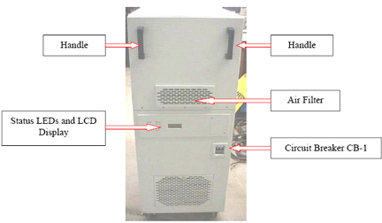
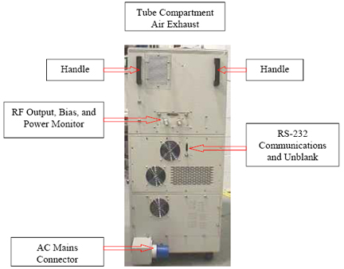
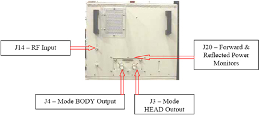
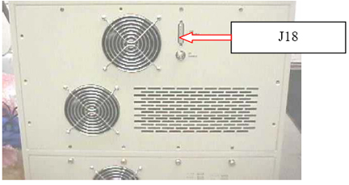
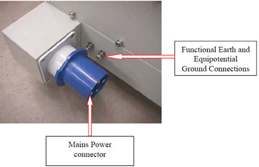

Operating Documentation
Direction 5440000, Rev# 5
Signa HDxt Service Methods
Module Version 2.0, Version Date 3/25/09
Operating Documentation |
| Required Persons | Preliminary Reqs | Procedure | Finalization |
|---|---|---|---|
| 1 |
This procedure provides the steps necessary to replace the 3.0T 35 kW MKS RF Cabinet. All connections to the amplifier are made either by hand or with standard tools. The front panel is shown in Illustration 1, and the rear panel in Illustration 2.
Illustration 1: Amplifier Front View

Illustration 2: Amplifier Rear View

| Item | Qty | Effectivity | Part# | Manufacturer | |
|---|---|---|---|---|---|
| 3.0T 35 kW RF Amplifier Cabinet | 1 | - | 5104896 | - | |
| ||||
| ELECTRIC SHOCK OR BURN! | ||||
| HigH Voltage. | ||||
| TURN “OFF” THE MAINS POWER SOURCE BEFORE REMOVING ANY AMPLIFIER ACCESS PANEL OR HANDLING WIRING. REPLACE THE ACCESS PANEL BEFORE TURNING THE MAINS POWER SOURCE “ON”! LOTO the Cabinet before removing any Cables. |
| Condition | Reference | Effectivity |
|---|---|---|
To avoid condensation problems, allow the shipping crate to warm to room temperature for two hours before opening. Once the amplifier is uncrated, allow it to warm to room temperature for one hour before applying power. | - | - |
Before making electrical connections, inspect the replacement amplifier for any evidence of shipping damage.
| ||||
| ELECTRIC SHOCK OR BURN! | ||||
| HigH Voltage. | ||||
| TURN OFF THE MAINS POWER SOURCE BEFORE REMOVING ANY AMPLIFIER ACCESS PANEL OR HANDLING the WIRING. Lock out / tag out the Cabinet before removing any Cables. REPLACE THE ACCESS PANEL BEFORE TURNING THE MAINS POWER SOURCE ON. |
Prepare for shutdown of equipment. Notify affected personnel working in the area that LOTO is being performed.
At the front panel of the PDU, place the RFI / Amplifier circuit breaker to the OFF position.
Apply LOTO to the Breaker Panel on the PDU.
On the front of the RF Cabinet, locate the CB-1 Circuit Breaker and place in the OFF position.
| NOTE: | If the amplifier was ON, then turned OFF, the fans continue to run for approximately one minute to allow the amplifier to cool down. |
Verify the amplifier is OFF.
Verify the fans are not running.
Allow at least three minutes for all high-voltage power supplies to discharge.
Remove the cables from the rear of the upper RF deck. (See Illustration 3.)
Illustration 3: Upper RF Deck Rear Connectors

Remove the cables from the rear of the lower Power Supply deck. (See Illustration 4.)
Illustration 4: Lower Power Supply Deck Connectors

Disconnect the AC mains power connection. (See Illustration 5.)
Illustration 5: Mains Power Connection

Move the failed cabinet out, and put the new cabinet in place.
Connect the AC mains power connection. (See Illustration 5.)
Connect the cable at the rear of the lower Power Supply deck. (See Illustration 4.)
Connect the cables from the rear of the upper RF deck. (See Illustration 3.)
On the front of the RF Cabinet, locate the CB-1 Circuit Breaker and place in the ON position.
Prepare for energizing of equipment. Notify affected personnel working in the area that LOTO is being removed.
At the front panel of the PDU, place the RFI / Amplifier circuit breaker to the OFF position.
Perform the following calibrations:
Perform the final calibrations:
Perform a test scan.